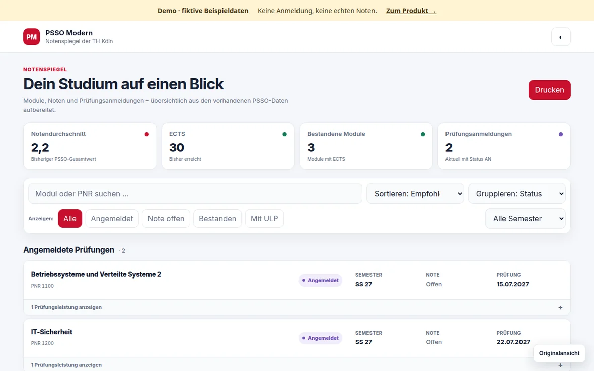
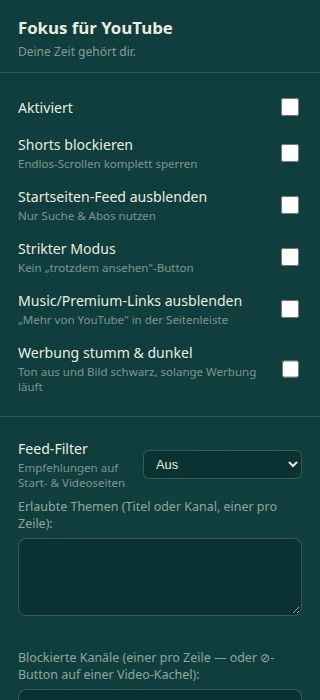
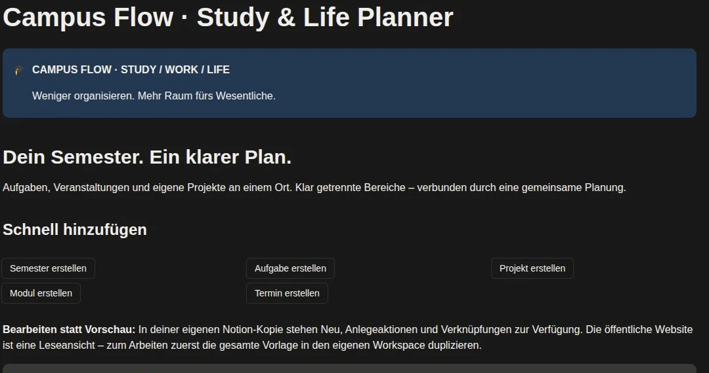

Ein klarer Plan, ein übersichtlicher Notenspiegel und mehr Fokus beim Lernen. Drei Werkzeuge, die aus meinem eigenen Studienalltag entstanden sind.
Eine moderne Ansicht für den PSSO-Notenspiegel der TH Köln: Module durchsuchen, Prüfungen filtern und Noten im Blick behalten.
Jetzt kostenlos im Chrome Web Store verfügbar. Einmal installieren und PSSO wie gewohnt öffnen – kein Tampermonkey erforderlich.

YouTube für das nutzen, wofür du es geöffnet hast: Shorts ausblenden, den Feed filtern und Inhalte nach deinen eigenen Regeln auswählen.
Kostenlos im Chrome Web Store verfügbar. Filter und Einstellungen lassen sich direkt in der Erweiterung anpassen.

Semester, Module, Aufgaben, Termine und eigene Projekte in einer klaren Notion-Vorlage. Entstanden aus meinem Studienalltag – für deinen nächsten Schritt.
Neu in Version 1.2: Semesterverwaltung, fünf Erstellen-Buttons und vorbereitete Modulseiten. Deine Kopie startet leer; Ausfüllhilfen begleiten die Einrichtung.
